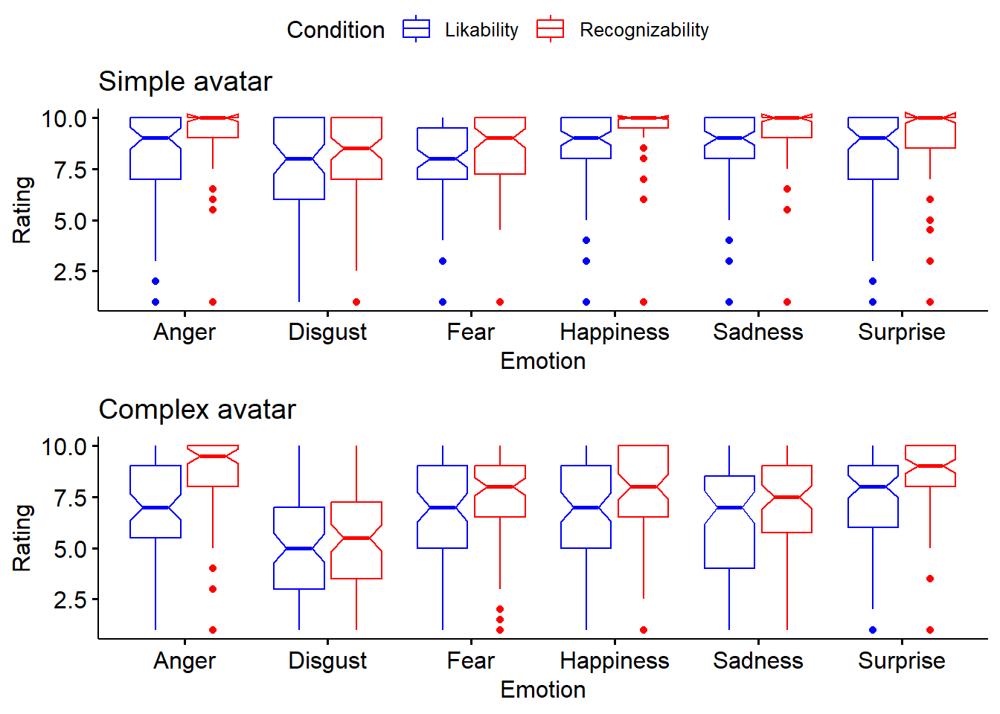

The data are provided in excel form and the tabs of interest are 2 and 3.
First step: reading the data
# data is loaded in the working directorysetwd("C:/Users/marmolf/Desktop/for guillermo (uncanny valley)")library(readxl)data <-read_excel("Datos Para Gráficos.xlsx", sheet ="fig2")# View(data)str(data)
The results suggest significant main effects and interactions. That is, main effect of ‘condition’ (chi square = 21.59, p = 3.3e-6, df = 1), ‘avatar’ (chi square = 28.84, p = 7.85e-8, df = 1) and the interaction ‘avatar’ x ‘condition’ (chi square = 119.97, p < 2.2e-16, df = 1).
Of interest, however, is the pairwise comparison between the likability ratings for simple vs complex avatar and the perceived humanity ratings for simple vs complex avatar. These pairwise comparisons were assessed via robust tests for two dependent groups (given that the same participants used both scales to rate both avatars).
Step 4: Pairwise comparisons
A test comparing the medians (.5 quantiles) was used.
The results suggest a significant difference (p < .05) between the likability for simple avatar (Median rating likability simple avatar = 8, 95% CI = [7.46, 8.53]) and complex avatar (Median = 3, 95% CI = [2.28, 3.71]).
This part looks at the ‘emotion recognition’ part of the study.
First step: reading the data
# data is loaded in the working directorysetwd("C:/Users/marmolf/Desktop/for guillermo (uncanny valley)")data2 <-read_excel("Datos Para Gráficos.xlsx", sheet ="fig3")
New names:
• `` -> `...6`
str(data2)
tibble [1,896 × 7] (S3: tbl_df/tbl/data.frame)
$ Respondent : num [1:1896] 1 1 1 1 1 1 1 1 1 1 ...
$ Condition : chr [1:1896] "Recognizability" "Likability" "Recognizability" "Likability" ...
$ Avatar : chr [1:1896] "Simple" "Simple" "Simple" "Simple" ...
$ Emotion : chr [1:1896] "Anger" "Anger" "Disgust" "Disgust" ...
$ Rating : num [1:1896] 10 10 7.5 9 9 9 10 10 8.5 10 ...
$ ...6 : logi [1:1896] NA NA NA NA NA NA ...
$ El Rating viene del Auxiliar con Excel bastante cuestionable, pero funciona: logi [1:1896] NA NA NA NA NA NA ...
'data.frame': 1896 obs. of 7 variables:
$ Respondent : num 1 1 1 1 1 1 1 1 1 1 ...
$ Condition : Factor w/ 2 levels "Likability","Recognizability": 2 1 2 1 2 1 2 1 2 1 ...
$ Avatar : Factor w/ 2 levels "Complex","Simple": 2 2 2 2 2 2 2 2 2 2 ...
$ Emotion : Factor w/ 6 levels "Anger","Disgust",..: 1 1 2 2 3 3 4 4 5 5 ...
$ Rating : num 10 10 7.5 9 9 9 10 10 8.5 10 ...
$ ...6 : logi NA NA NA NA NA NA ...
$ El.Rating.viene.del.Auxiliar.con.Excel.bastante.cuestionable..pero.funciona: logi NA NA NA NA NA NA ...
Step 2: plot
A plot for each avatar
simple.avatar <-subset(data2, Avatar=='Simple')SIMP <-ggboxplot(simple.avatar, x ="Emotion", y ="Rating", title='Simple avatar',color ="Condition", notch=T,palette =c("blue", "red"))complex.avatar <-subset(data2, Avatar=='Complex')COMP <-ggboxplot(complex.avatar, x ="Emotion", y ="Rating", title='Complex avatar',color ="Condition", notch=T,palette =c("blue", "red"))ggarrange(SIMP, COMP, common.legend =TRUE,ncol =1, nrow =2)
Notch went outside hinges
ℹ Do you want `notch = FALSE`?
Notch went outside hinges
ℹ Do you want `notch = FALSE`?
Notch went outside hinges
ℹ Do you want `notch = FALSE`?
Notch went outside hinges
ℹ Do you want `notch = FALSE`?
Notch went outside hinges
ℹ Do you want `notch = FALSE`?
Notch went outside hinges
ℹ Do you want `notch = FALSE`?
Notch went outside hinges
ℹ Do you want `notch = FALSE`?
Notch went outside hinges
ℹ Do you want `notch = FALSE`?

Step 3: data analysis
The interest is to see what variable (i.e. type of avatar [2 levels], type of rating [2 levels], and type of emotion [6 levels]) has a main effect.
The results suggest there were main effects from the three variables. That is, a main effect of ‘emotion’ suggests their combined ratings differed between emotions. A main effect of ‘condition’ indicates that the average likability and recognizability also differed. Likewise, the average combined ratings for complex vs simple avatars also differed.
The interest, though, is on knowing if the likability ratings (across all emotions) between complex and simple avatars are different. Also, it was the interest to know if the recognizability ratings (across all emotions) between complex and simple avatars are different.
Step 4: Pairwise comparisons
A test comparing the medians (.5 quantiles) was used.